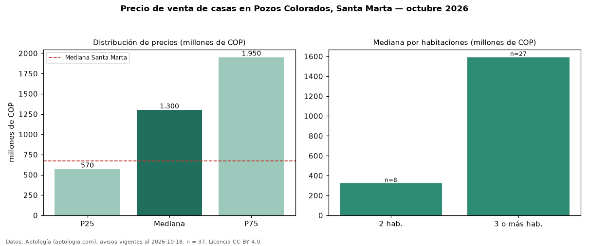

Precio de venta de casas en Pozos Colorados, Santa Marta — octubre 2026
COP 1,30 mil millones es el precio mediano de casas en venta en Pozos Colorados, Santa Marta (n = 37 avisos). Frente a la mediana de Santa Marta para casas (COP 670 millones), queda 94 % por encima. Por metro cuadrado, la mediana es COP 5,45 millones/m² (n = 34 avisos con área), 56 % por encima de Santa Marta (COP 3,49 millones/m²). Por precio mediano es el puesto 1 de 9 barrios de Santa Marta con al menos 30 avisos de casas en venta (COP): entre las más caras. La mitad central de los avisos va de COP 570 millones a COP 1,95 mil millones (razón 3,4), una dispersión alta. El área mediana anunciada es 234 m². El segmento con más oferta es el de 3 o más habitaciones (27 avisos, mediana COP 1,59 mil millones); pasar de 2 habitaciones a 3 o más habitaciones cambia la mediana +397 %. La administración mediana declarada es COP 950.000 al mes (n = 27). Datos: Aptología (aptologia.com), CC BY 4.0 — https://www.aptologia.com/casas-en-venta/santa-marta/pozos-colorados. Archivos: PDF, CSV con las cifras y gráfica PNG.

| Avisos únicos | 37 |
|---|---|
| Percentil 25 | COP 570.000.000 |
| Mediana | COP 1.300.000.000 |
| Percentil 75 | COP 1.950.000.000 |
| Mediana por m² | COP 5.448.660 |
Fuente: avisos vigentes de portales inmobiliarios recopilados por Aptología, deduplicados (mínimo 30 avisos únicos por celda). Precios pedidos, no cerrados. Fecha: 2026-10-18.